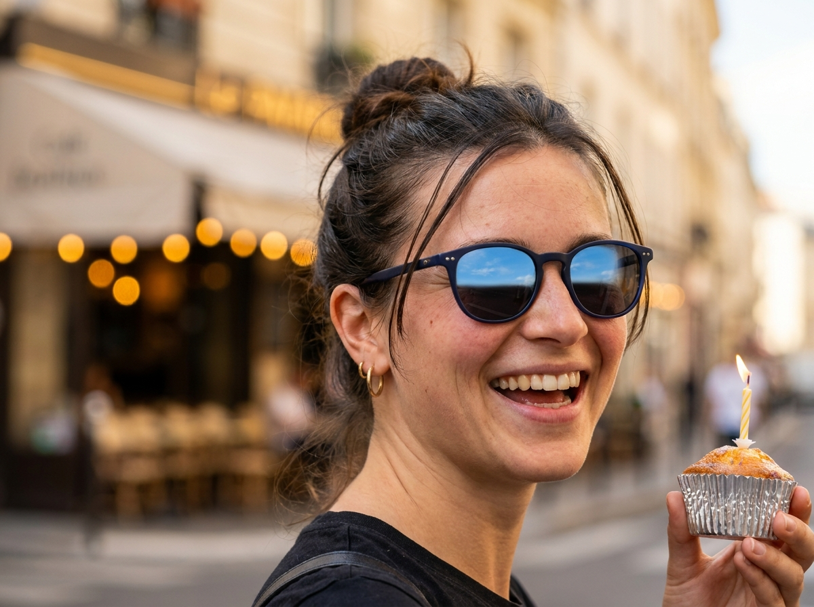
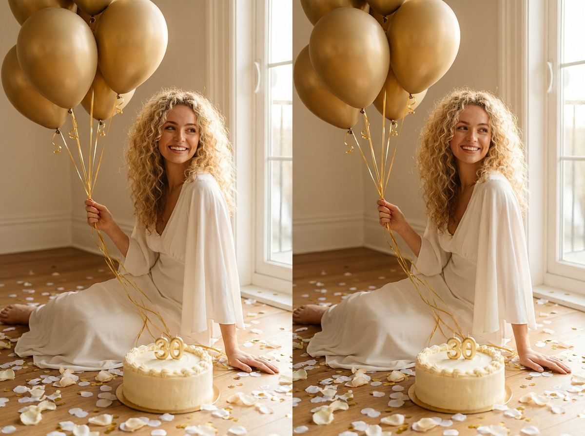
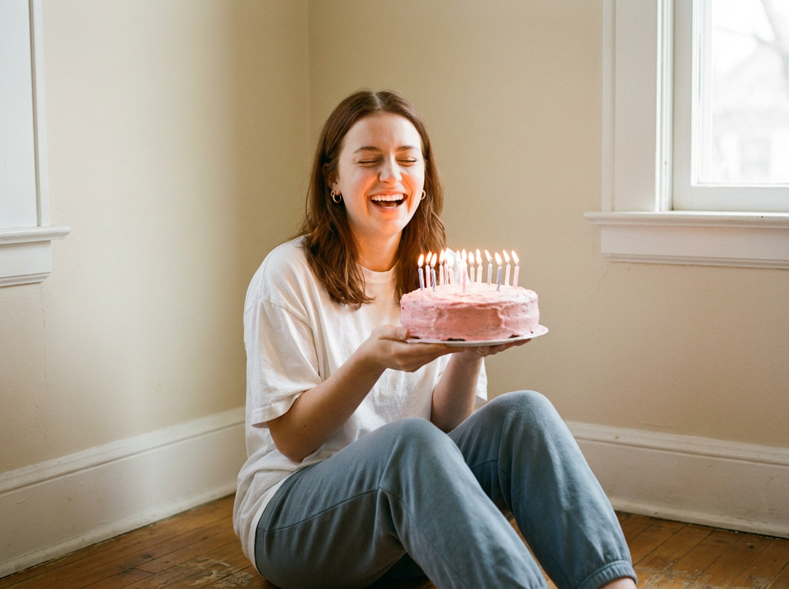
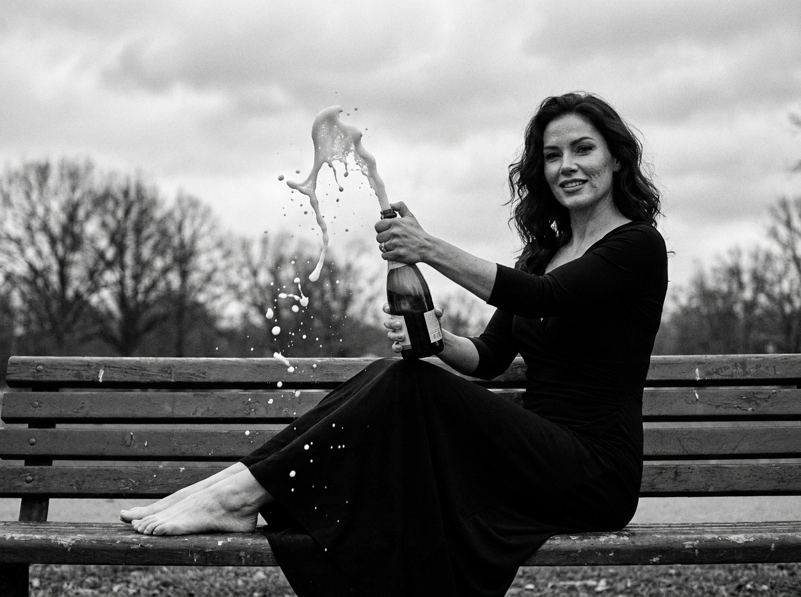
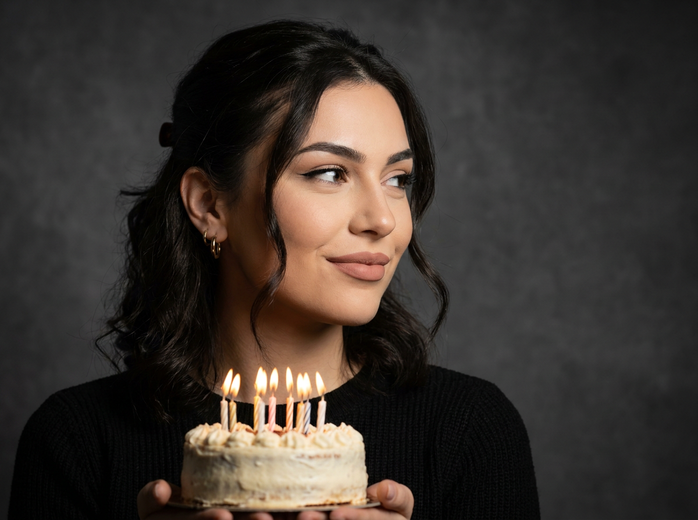
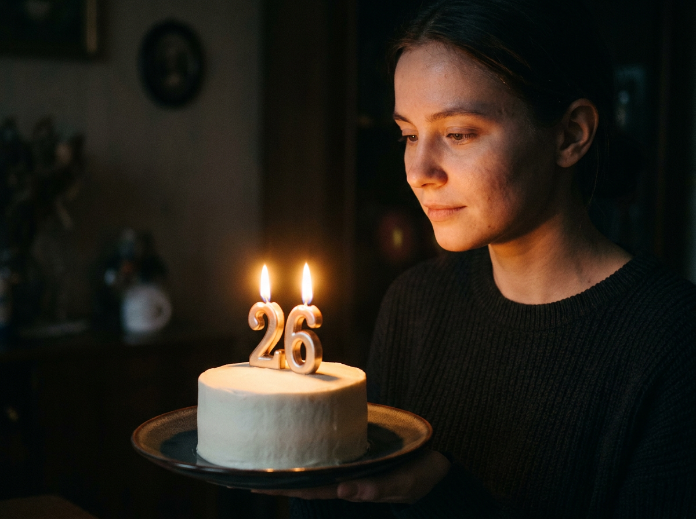
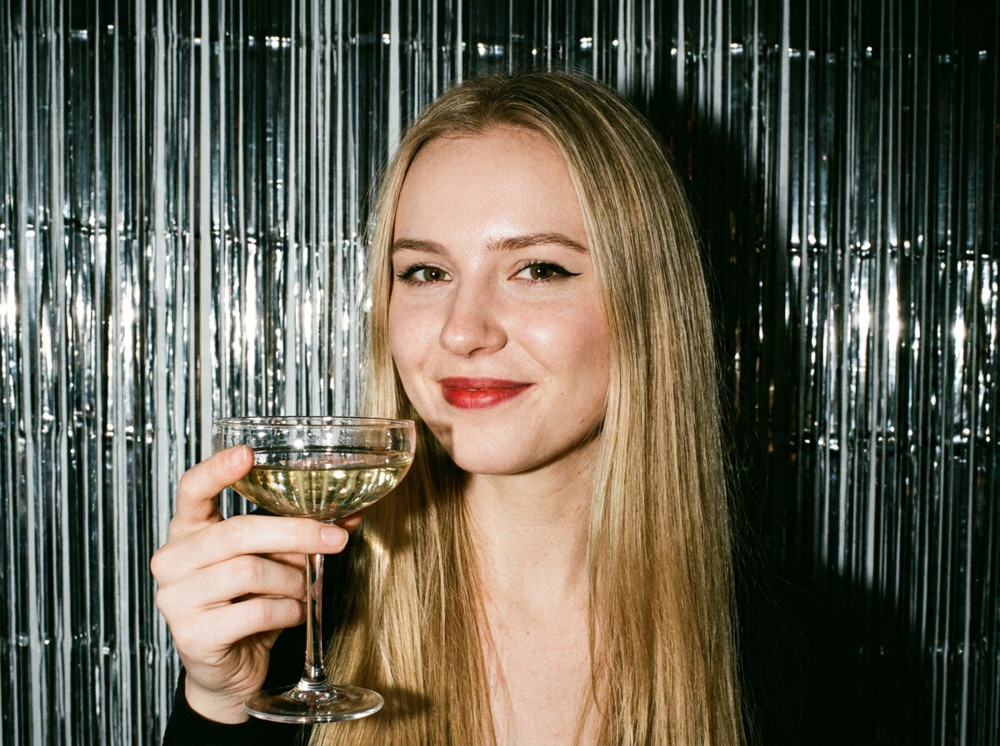
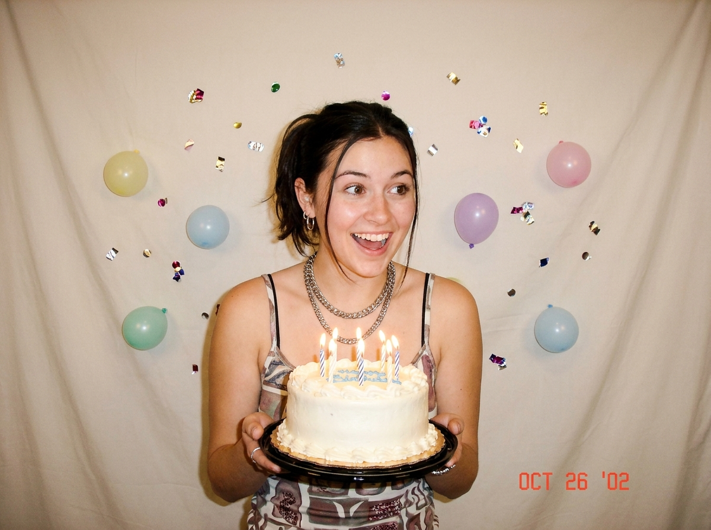
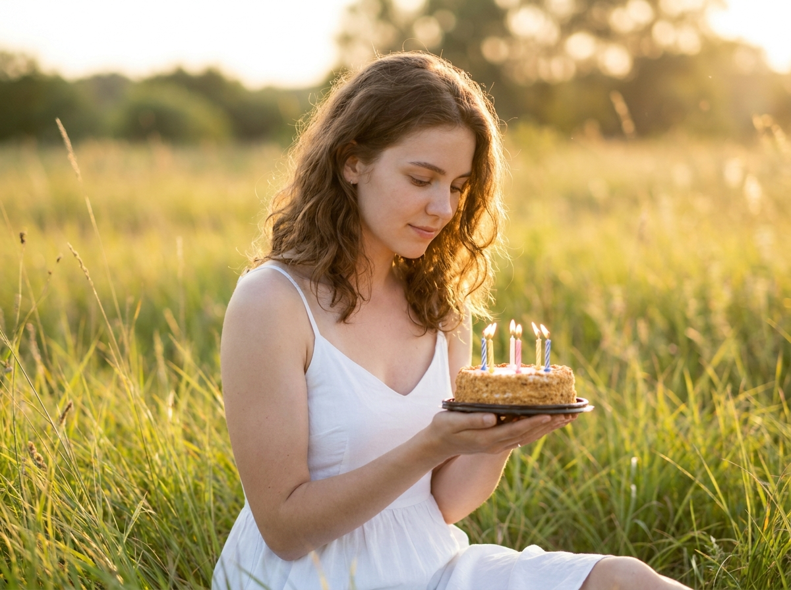

ИИ-фото на день рождения: 10 промптов для фотосессии в нейросети
Категория: ИИ-фото
Модель: Nano Banana Pro
Зачем нужны ИИ-фото на день рождения
День рождения — повод для красивых кадров. Не у каждого есть бюджет на студию и фотографа. ИИ-фотосессия решает задачу: загружаете своё фото, выбираете промпт — через минуту получаете кадр, который выглядит как съёмка для журнала. Ниже — десять готовых промптов для разных сценариев: от студийного портрета с тортом до чёрно-белой съёмки с шампанским.
Как сделать ИИ-фото на день рождения
Способ 1. Через страницу стиля. Откройте страницу «ИИ-фото на день рождения» на STIVA.ai. Загрузите свою фотографию, выберите готовую идею из галереи — система подберёт промпт и сгенерирует кадр. Не требует знаний о промптах, занимает меньше минуты.
Способ 2. Через модель Nano Banana Pro. Откройте Nano Banana Pro в STIVA.ai, загрузите своё фото как референс и вставьте один из промптов ниже. Модель сохранит ваши черты лица. От 300 токенов за генерацию, тарифы — от 495 ₽/мес.
10 промптов для ИИ-фото на день рождения
1. Премиальная студийная съёмка с тортом
Строго сохранить внешность по загруженному референсу: черты лица, пропорции, мимику и текстуру кожи без изменений. Фотореалистичный студийный портрет молодой женщины в день рождения. Элегантный чёрный блейзер поверх тёмного платья, длинные прямые тёмные волосы, чёрные очки cat-eye. Уверенная поза в три четверти. В руках — небольшой шоколадный торт с ягодами и одной горящей свечой. На заднем плане — крупная белая цифра «31» на светло-серой стене. По бокам — глянцевые чёрные латексные шары. Премиальная ночная атмосфера праздника, мягкий студийный свет, чёткий фокус, 8K.
2. Живой стрит-портрет у кафе

Строго сохранить внешность по загруженному референсу: черты лица, пропорции, мимику и текстуру кожи без изменений. Фотореалистичный стрит-портрет в тёплый солнечный день. Молодая женщина искренне смеётся у входа в кафе, лицо развёрнуто к камере в три четверти. Тёмные очки с синей оправой отражают небо. Небольшие золотые серьги. Волосы убраны назад с свободными прядями. Естественный тон кожи с лёгким румянцем. В руках — маленький кекс с свечой. Фон — сильно размытая улица с боке. Lifestyle-фотография, 85mm, малая глубина резкости.
3. Золотые шары и воздушное платье

Строго сохранить внешность по загруженному референсу: черты лица, пропорции, мимику и текстуру кожи без изменений. Фотореалистичная праздничная сцена. Молодая женщина с пышными светлыми локонами сидит на полу рядом с тортом. В руках — связка крупных матово-золотых шаров на тонких золотых лентах. Белое струящееся платье с широкими рукавами. Круглый торт с белым кремом и золотой цифрой «30». Лепестки роз и конфетти на полу. Тёплый свет золотого часа из окна. Редакторская праздничная съёмка, романтичное настроение.
4. Уютное утро с тортом и свечами

Строго сохранить внешность по загруженному референсу: черты лица, пропорции, мимику и текстуру кожи без изменений. Портрет в плёночном стиле с лёгким зерном и мягкой передержкой. Молодая женщина с каштановыми волосами сидит на полу у светлой стены. Белая оверсайз-футболка и серо-голубые спортивные штаны. Глаза закрыты, широкая искренняя улыбка. В руках — круглый торт с розовой глазурью и рядом горящих свечей. Уютное домашнее утро рождения, естественный свет из окна. Винтажная эстетика, 50mm, тёплые тона.
5. Чёрно-белое шампанское

Строго сохранить внешность по загруженному референсу: черты лица, пропорции, мимику и текстуру кожи без изменений. Чёрно-белая birthday-съёмка. Женщина в элегантном чёрном платье сидит на парковой скамейке с бутылкой шампанского. Мощный фонтан пены взрывается из горлышка, капли застыли в воздухе. Тёмные волнистые волосы, уверенная поза, босые ноги. Фон — размытый парк с деревьями и пасмурным небом. Высокий контраст монохрома, киношный fashion-стиль, зернистость плёнки. Canon EOS R5, 50mm, f/2.0.
6. Студийный fashion-портрет со свечами

Строго сохранить внешность по загруженному референсу: черты лица, пропорции, мимику и текстуру кожи без изменений. Фотореалистичный студийный fashion-портрет. Молодая женщина стоит в три четверти, лицо повёрнуто вправо с уверенной полуулыбкой. Волосы мягкими волнами, частично убраны назад. Аккуратный макияж: ровный тон, стрелки, нюдовые губы. Небольшие золотые серьги. Держит праздничный торт с горящими свечами. Тёмно-серый студийный фон, драматичный боковой свет, 85mm.
7. Торт со свечами-цифрами в полумраке

Строго сохранить внешность по загруженному референсу: черты лица, пропорции, мимику и текстуру кожи без изменений. Кинематографичный портрет в тёмном помещении с тёплым свечным светом. На тёмной тарелке — небольшой белый торт с гладким кремом. Две свечи-цифры «26» ярко горят сверху. На заднем плане — силуэт молодой женщины, лицо в мягком фокусе. Тёплое свечение от свечей освещает черты. Малая глубина резкости, атмосферная ночь рождения, 50mm, f/1.8.
8. Гламурная вечеринка с мишурой

Строго сохранить внешность по загруженному референсу: черты лица, пропорции, мимику и текстуру кожи без изменений. Фотореалистичный party-портрет в помещении. Молодая женщина с длинными прямыми светлыми волосами стоит перед занавесом из металлической мишуры. Грамотный макияж, подведённые глаза, expressивные губы. Держит бокал шампанского, лёгкая улыбка. Эффект вспышки, резкие блики на металле, лёгкое зерно, кинематографичный контраст. Праздничный гламурный mood, 35mm.
9. Ностальгический вайб в стиле Y2K

Строго сохранить внешность по загруженному референсу: черты лица, пропорции, мимику и текстуру кожи без изменений. Фотореалистичный портрет в эстетике Y2K. Простая студия со светлым фоном. Прямая вспышка создаёт контрастные тени и лёгкий пересвет — характерно для цифровых камер начала 2000-х. Молодая женщина держит праздничный торт с горящими свечами, искренне радостное выражение. Конфетти и маленькие шары. Ностальгический вайб, snapshot-стиль.
10. Вечерний портрет в траве с тортом

Строго сохранить внешность по загруженному референсу: черты лица, пропорции, мимику и текстуру кожи без изменений. Фотореалистичный портрет на природе в тёплом вечернем свете. Молодая женщина сидит в траве, слегка наклонившись вперёд, взгляд опущен на торт в руках. Нежное спокойное выражение, лёгкая полуулыбка. Волосы естественными волнами. Естественный макияж. Белое летнее платье. Горящие свечи на торте. Фон — луг в золотой час, мягкое боке. 85mm, f/1.8.
Специфика ИИ-фото на день рождения
День рождения — это эмоции, а не только реквизит. Лучшие ИИ-фото получаются, когда промпт описывает не только торт и шары, но и настроение: смех, задумчивость, уверенность. Нейросеть лучше справляется, когда вы даёте ей конкретику — цвет платья, тип освещения, ракурс камеры.
Главное правило: загружайте фото хорошего качества с чётко видимым лицом. Nano Banana Pro сохраняет черты лица, но если исходник размыт — результат будет таким же. Фотография анфас с нейтральным выражением работает лучше всего.
Идеи и вариации
- Фото в стиле 90-х — с ковром, винтажными игрушками и вспышкой в лоб
- Чёрно-белая съёмка — драматично и стильно, подходит для вечерних кадров
- Фото с маленькой собой — детская версия рядом со взрослой
- Тематическая вечеринка — диско, ретро, бал, любая стилизация через промпт
- Кадр на природе — пикник, поле, закат, торт на пледе
Как писать промпт для ИИ-фото на день рождения
Хороший промпт состоит из пяти частей:
- Кто — пол, возраст, внешность, одежда, причёска
- Где — локация, фон, окружение
- Что делает — поза, выражение лица, действие
- Реквизит — торт, шары, свечи, шампанское, подарки
- Технические параметры — освещение, объектив, стиль съёмки, формат
Чем точнее каждая часть — тем предсказуемее результат. Но не перегружайте: 5-7 предложений обычно достаточно. И обязательно добавляйте команду сохранения лица — без неё нейросеть проигнорирует ваше фото.
Частые ошибки
- Слишком короткий промпт — «девушка с тортом» даст случайный результат. Опишите сцену детально.
- Плохой референс — фото в тёмных очках, шапке или сбоку — нейросеть не поймёт черты лица.
- Противоречивые инструкции — «дневной свет» и «ночная вечеринка» в одном промпте запутают модель.
- Нет команды сохранения лица — без неё модель создаст случайное лицо, а не ваше.
FAQ
Как сделать ИИ-фото на день рождения бесплатно?
Бесплатные варианты есть, но с ограничениями. Kandinsky от Сбера и Шедеврум от Яндекса генерируют бесплатно, но качество заметно ниже — лица менее реалистичные, детали смазаны, промпты понимают хуже. Krea AI и Arena.ai дают бесплатные лимиты, но после нескольких генераций требуют подписку. Главная проблема — бесплатные сервисы либо не поддерживают загрузку референса, либо делают это плохо. Для качественного ИИ-фото, где важно сохранить узнаваемость, нужен Nano Banana Pro.
Нужен ли VPN для генерации ИИ-фото?
Нет. Платформа работает из России, оплата — карта МИР и СБП.
Сколько стоит одно ИИ-фото?
От 300 токенов за генерацию. При тарифе 495 ₽/мес (3000 токенов) — около 10 фото.
Сохранит ли нейросеть моё лицо?
Да, если в промпте есть команда сохранения лица и загружено чёткое фото анфас.